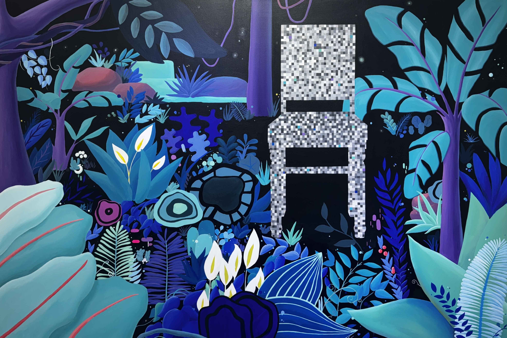

About
Artist / Painter
Soyeon C는 색채와 질감을 통해 감각적인 언어를 구사하는 화가입니다. 서울에서 태어나 자란 그녀는 자연의 에너지와 인간 내면의 복잡한 감정을 캔버스 위에 담아냅니다.
그녀의 작품은 즉흥적인 붓터치와 겹겹이 쌓인 물감의 레이어로 이루어집니다. 혼돈과 질서 사이의 경계를 탐구하며, 보는 이로 하여금 언어로 표현할 수 없는 감정의 깊이를 느끼게 합니다.


Philosophy
Finding vitality
in the untamed.
Soyeon은 통제되지 않은 것 속에서 생동감을 찾는다는 철학을 중심으로 작업합니다. 순간적인 충동과 날것의 감각을 포착하고, 모든 붓터치가 아무리 즉흥적이라 할지라도 고유한 이야기를 담을 수 있다고 믿습니다.
자연의 에너지와 억제되지 않은 존재의 시를 담은 그녀의 작품은 색채의 레이어와 순수한 표현의 순간들을 영구적으로 보존합니다.
"Every stroke, no matter how spontaneous,
has the potential to tell a unique story."
— Soyeon C

Studio
서울의 작업실에서 Soyeon은 매일 자연광과 함께 작업합니다. 캔버스와의 대화, 물감이 공기와 만나는 순간 — 그 모든 과정이 그녀에게는 살아있는 예술입니다.
현재 국내외 갤러리와 협업 중이며, 개인전을 준비하고 있습니다. 작품 구매 및 전시 문의는 아래 버튼을 통해 연락해 주세요.
Contact